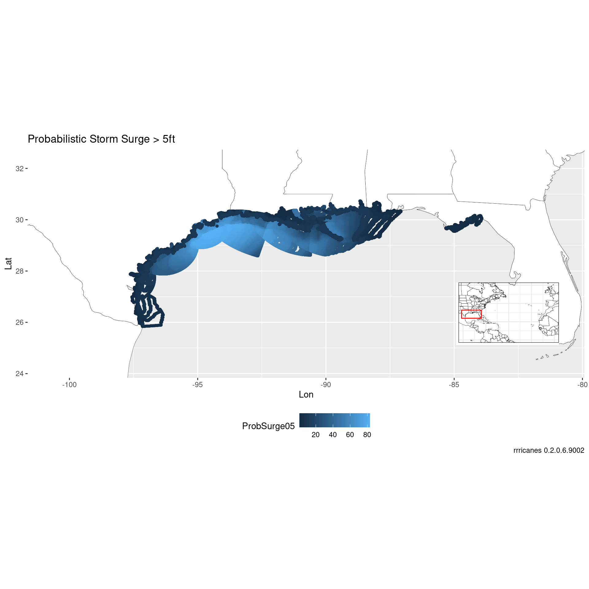

Probabilistic Storm Surge
Tim Trice
June 11, 2017
Source:vignettes/probabilistic_storm_surge.Rmd
probabilistic_storm_surge.RmdProbabilistic Storm Surge
Calculate the last date/time of forecast/advisory product and subtract 3 hrs
Wrap gis_download in safely. Not all products will exist for every storm or even every advisory.
I’m downloading the psurge products for 5 feet since there are no other storm surge products available for Ike.
dl <- purrr::safely(.f = gis_download)
gis_surge <- gis_prob_storm_surge(key, products = list("psurge" = c(5)),
datetime = dt) %>% dl()## Warning in OGRSpatialRef(dsn, layer, morphFromESRI = morphFromESRI, dumpSRS
## = dumpSRS, : Discarded ellps NCEP_SPHERE in Proj4 definition: +proj=longlat
## +R=6371200 +no_defs## Warning in OGRSpatialRef(dsn, layer, morphFromESRI = morphFromESRI, dumpSRS
## = dumpSRS, : Discarded datum NCEP_SPHERE in Proj4 definition: +proj=longlat
## +R=6371200 +no_defs## Warning in showSRID(wkt2, "PROJ"): Discarded ellps NCEP_SPHERE in Proj4
## definition: +proj=longlat +R=6371200 +no_defs +type=crs## Warning in showSRID(wkt2, "PROJ"): Discarded datum NCEP_SPHERE in Proj4
## definition## OGR data source with driver: ESRI Shapefile
## Source: "/tmp/RtmpavP8B6", layer: "al092008_2008091112_gt5"
## with 83 features
## It has 2 fieldsGenerate a base plot of the Atlantic ocean.
bp <- al_tracking_chart(color = "black", fill = "white", size = 0.1, res = 50)## Regions defined for each Polygons
## Regions defined for each Polygons## Coordinate system already present. Adding new coordinate system, which will replace the existing one.Since we’re dealing with a polygon shapefile, we can get the bounding box of the dataset.
bbox <- bbox(gis_surge$result$al092008_2008091112_gt5)Add a little cushion for the map inset.
lat_min <- bbox[2,1] - 2
lat_max <- bbox[2,2] + 2
lon_min <- bbox[1,1] - 4
lon_max <- bbox[1,2] + 4Build a map inset.
bp_inset <- ggplotGrob(bp +
geom_rect(mapping = aes(xmin = lon_min, xmax = lon_max,
ymin = lat_min, ymax = lat_max),
color = "red", alpha = 0) +
theme_bw() +
theme(axis.title = element_blank(),
axis.ticks = element_blank(),
axis.text.x = element_blank(),
axis.text.y = element_blank(),
plot.margin = margin(0, 0, 0, 0, "pt")))Modify original bp zoomed in on our area of interest.
bp <- bp +
coord_equal(xlim = c(lon_min, lon_max),
ylim = c(lat_min, lat_max)) +
scale_x_continuous(expand = c(0, 0)) +
scale_y_continuous(expand = c(0, 0)) +
labs(x = "Lon",
y = "Lat",
caption = sprintf("rrricanes %s", packageVersion("rrricanes")))## Coordinate system already present. Adding new coordinate system, which will replace the existing one.Combine bp and bp_inset to finalize initial base plot. bp will be a base plot without the inset. bpi will have the inset.
bpi <- bp + annotation_custom(grob = bp_inset, xmin = lon_max - 5,
xmax = lon_max - 1, ymin = -Inf,
ymax = lat_min + 5)Convert the SpatialPolygonsDataframe to a dataframe.
shp_storm_surge <- shp_to_df(gis_surge$result$al092008_2008091112_gt5) ## Warning in RGEOSUnaryPredFunc(spgeom, byid, "rgeos_isvalid"): Ring Self-
## intersection at or near point -91.737571720000005 30.046955109999999## Warning in RGEOSUnaryPredFunc(spgeom, byid, "rgeos_isvalid"): Ring Self-
## intersection at or near point -91.719192500000005 30.234281540000001## Warning in RGEOSUnaryPredFunc(spgeom, byid, "rgeos_isvalid"): Ring Self-
## intersection at or near point -96.348724369999999 28.765779500000001## Warning in RGEOSUnaryPredFunc(spgeom, byid, "rgeos_isvalid"): Ring Self-
## intersection at or near point -91.253189090000006 29.984903339999999## Warning in RGEOSUnaryPredFunc(spgeom, byid, "rgeos_isvalid"): Ring Self-
## intersection at or near point -90.783256530000003 29.898960110000001## Warning in RGEOSUnaryPredFunc(spgeom, byid, "rgeos_isvalid"): Ring Self-
## intersection at or near point -94.629417419999996 29.864345549999999## Warning in RGEOSUnaryPredFunc(spgeom, byid, "rgeos_isvalid"): Ring Self-
## intersection at or near point -90.294624330000005 29.640205380000001## Warning in RGEOSUnaryPredFunc(spgeom, byid, "rgeos_isvalid"): Ring Self-
## intersection at or near point -89.751045230000003 30.516399379999999## Warning in RGEOSUnaryPredFunc(spgeom, byid, "rgeos_isvalid"): Ring Self-
## intersection at or near point -90.7856369 29.466335300000001## Warning in RGEOSUnaryPredFunc(spgeom, byid, "rgeos_isvalid"): Ring Self-
## intersection at or near point -90.656616209999996 29.417226790000001## Warning in RGEOSUnaryPredFunc(spgeom, byid, "rgeos_isvalid"): Ring Self-
## intersection at or near point -96.302360530000001 28.686407089999999## Warning in RGEOSUnaryPredFunc(spgeom, byid, "rgeos_isvalid"): Ring Self-
## intersection at or near point -91.505218510000006 29.683414460000002## Warning in RGEOSUnaryPredFunc(spgeom, byid, "rgeos_isvalid"): Ring Self-
## intersection at or near point -92.575874330000005 29.868747710000001## Warning in RGEOSUnaryPredFunc(spgeom, byid, "rgeos_isvalid"): Ring Self-
## intersection at or near point -92.616615300000007 29.801092149999999## Warning in RGEOSUnaryPredFunc(spgeom, byid, "rgeos_isvalid"): Ring Self-
## intersection at or near point -91.460922240000002 29.631181720000001## Warning in RGEOSUnaryPredFunc(spgeom, byid, "rgeos_isvalid"): Ring Self-
## intersection at or near point -92.579154970000005 29.709463119999999## Warning in RGEOSUnaryPredFunc(spgeom, byid, "rgeos_isvalid"): Ring Self-
## intersection at or near point -91.626701350000005 29.78854179## Warning in RGEOSUnaryPredFunc(spgeom, byid, "rgeos_isvalid"): Ring Self-
## intersection at or near point -90.710487369999996 29.014230730000001## Warning in RGEOSUnaryPredFunc(spgeom, byid, "rgeos_isvalid"): Ring Self-
## intersection at or near point -95.98847198 28.432285310000001## Warning in RGEOSUnaryPredFunc(spgeom, byid, "rgeos_isvalid"): Ring Self-
## intersection at or near point -89.794616700000006 29.835002899999999## Warning in RGEOSUnaryPredFunc(spgeom, byid, "rgeos_isvalid"): Ring Self-
## intersection at or near point -91.866325380000006 29.9016552## Warning in RGEOSUnaryPredFunc(spgeom, byid, "rgeos_isvalid"): Ring Self-
## intersection at or near point -92.386306759999997 29.541282649999999## Warning in RGEOSUnaryPredFunc(spgeom, byid, "rgeos_isvalid"): Ring Self-
## intersection at or near point -94.230262760000002 29.709266660000001## Warning in RGEOSUnaryPredFunc(spgeom, byid, "rgeos_isvalid"): Ring Self-
## intersection at or near point -94.597785950000002 29.522840500000001## Warning in RGEOSUnaryPredFunc(spgeom, byid, "rgeos_isvalid"): Ring Self-
## intersection at or near point -94.368270870000003 29.630216600000001## Warning in RGEOSUnaryPredFunc(spgeom, byid, "rgeos_isvalid"): Ring Self-
## intersection at or near point -93.938018799999995 29.422967910000001## Warning in RGEOSUnaryPredFunc(spgeom, byid, "rgeos_isvalid"): Ring Self-
## intersection at or near point -94.696296689999997 29.369365689999999## Warning in RGEOSUnaryPredFunc(spgeom, byid, "rgeos_isvalid"): Ring Self-
## intersection at or near point -94.250823969999999 29.567092899999999## SpP is invalid## Warning in rgeos::gUnaryUnion(spgeom = SpP, id = IDs): Invalid objects found;
## consider using set_RGEOS_CheckValidity(2L)Probability of storm surge greater than five feet.
bpi + geom_point(data = shp_storm_surge,
aes(x = long, y = lat, color = ProbSurge05), size = 1) +
theme(legend.position = "bottom",
legend.box = "vertical") +
labs(title = "Probabilistic Storm Surge > 5ft",
caption = sprintf("rrricanes %s", packageVersion("rrricanes")))